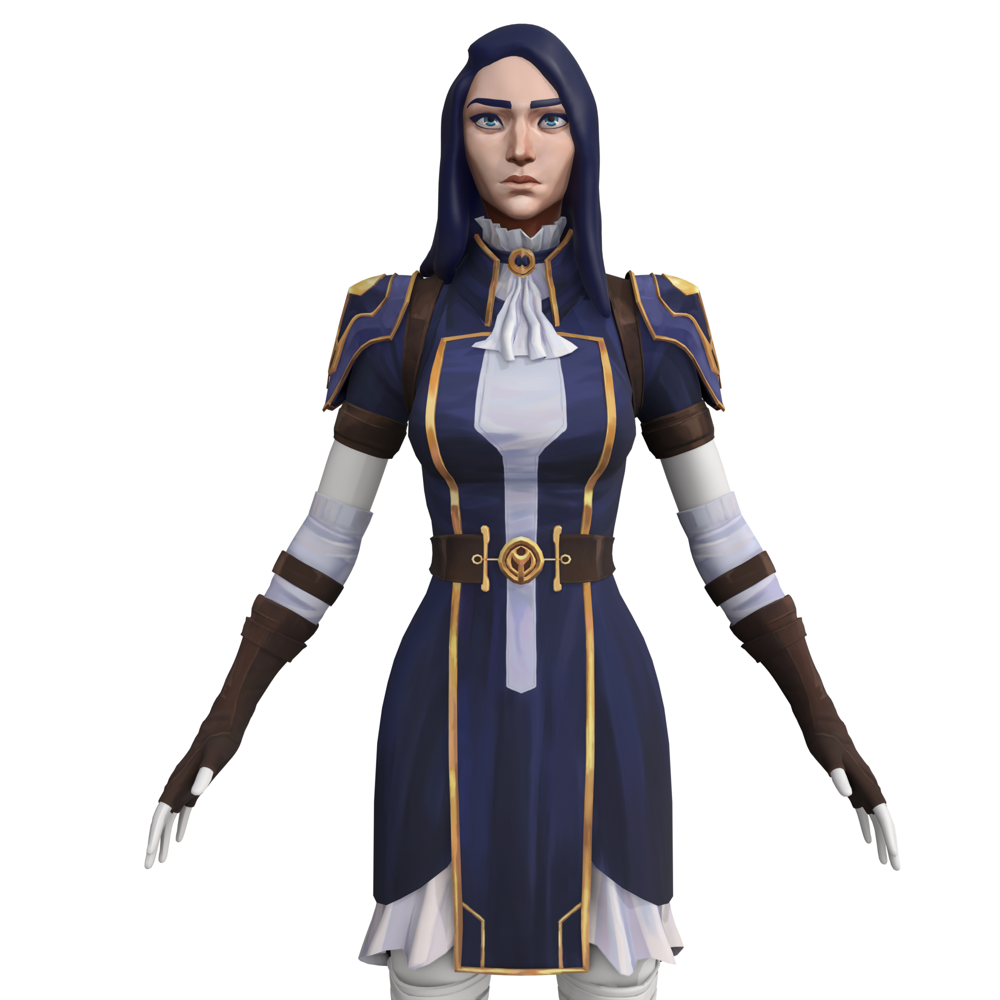
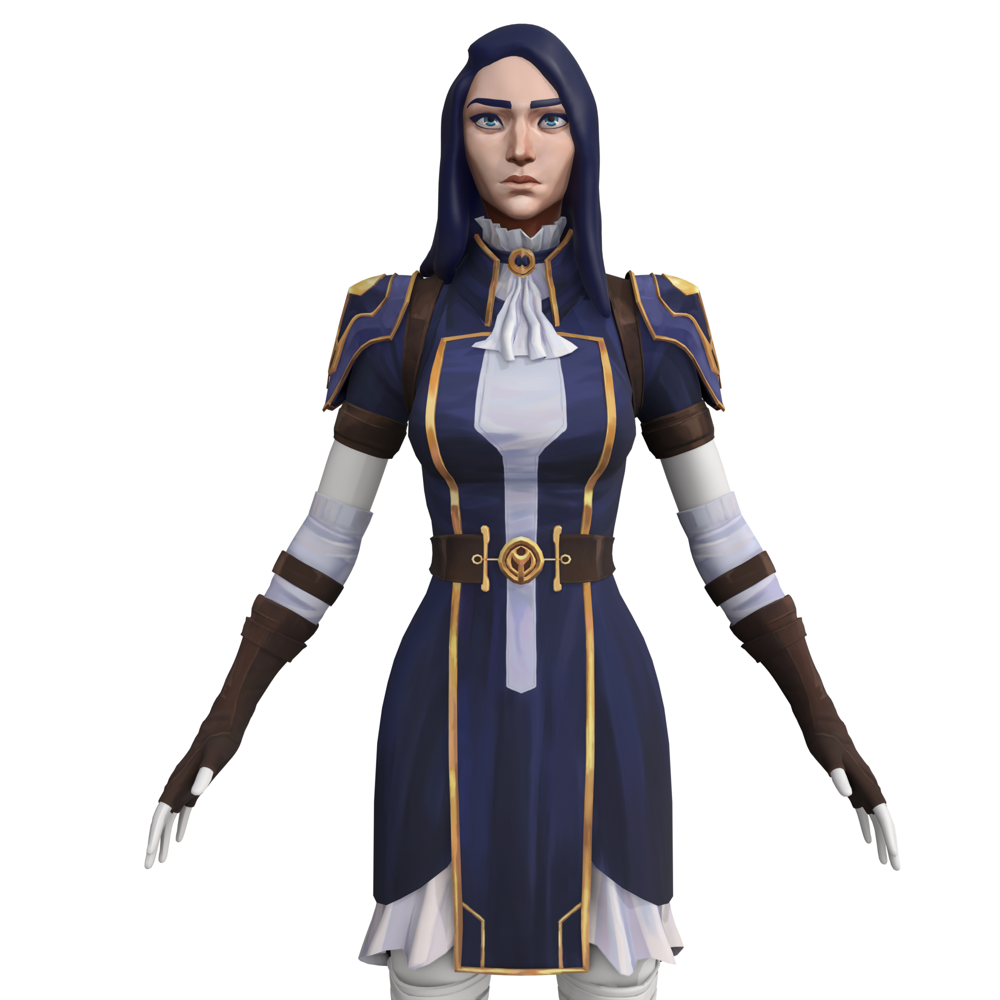

關於我
我是一名3D建模愛好者，專注於創造各種3D模型，更加專注於武器。我熱愛結合創意設計與現代技術，為每個項目帶來獨特的解決方案。
憑藉著對細節的關注和對創新的追求，我致力於將想法轉化為令人印象深刻的數位作品。
我是一名3D建模愛好者，專注於創造各種3D模型，更加專注於武器。我熱愛結合創意設計與現代技術，為每個項目帶來獨特的解決方案。
憑藉著對細節的關注和對創新的追求，我致力於將想法轉化為令人印象深刻的數位作品。


高擬真的二戰時期 Sten 衝鋒槍 3D 模型，完整的材質製作流程，包含金屬磨損、木質紋理和歷史考據的細節重現。專為遊戲引擎優化的低面數模型。
查看項目 →


經典美式手槍 Colt M1911 的精密 3D 重建，注重機械結構的準確性和表面材質的真實感。使用 PBR 材質工作流程，適用於現代渲染引擎。
查看項目 →
 

基於 Netflix 動畫《Arcane》中凱特琳角色的 3D 重現項目。研究並模仿了動畫的獨特手繪風格，創建了風格化的 3D 角色模型和自訂材質系統。
查看項目 →